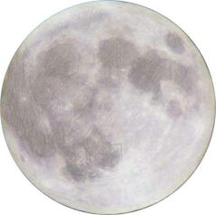

 Dévant qué ch't' année dé mil neu' chent souoxante-ieune s'êcoule, i' n'faut pon oubliyer qu'ou' s'sa fanmeuse à l'av'nîn comme l'année d'la contchête dé l'espace et des preunmié viages dans l'cosmos par des humains.
A vîngt-trais jours d'intèrvalle, deux hommes ont peu r'vénîn sains et saufs sus la tèrre auprés tch'il' avaient confié lus vies à chu tchéthiot dé nouvelle sorte tch'est la fusée munie d'eune cabane ou capsule pouor porter l'astronaute dans l'espace.
Lé preunmyi, un Russe nommé Youri Gagarine, fut satellisé lé 12 d'avri, 1961. V'là tchi veurt dithe qué san navithe cosmique rêussit à travèrser l'air à la vitesse nécessaithe pouor dêpasser l'êpaisseu d'l'enveloppe d'atmosphéthe tch'entouothe la tèrre - 17,360 milles (28,000 kilomètres) à l'heuthe - pouor monter dans l'espace, où-est tch'i' fît l'tou d'la tèrre en orbite deux-s'trais fais.
Lé 5 dé mai, 1961, un Améthitchain, lé Mâjeur Alan Shephard, fit un bond dé 185 kilomètres (quâsi 115 milles) dans l'espace à bord d'eune fusée "Redstone-Mercury" souffliée en l'air du Cap Canaveral en Floride. La capsule, èrdescendue au but d'un long parachute, fut r'pêtchie en mé et l'Mâjeur n'avait subi autcheun ma.
Deux aut' întrépides, acouo un Russe et un Améthitchain, ont fait un viage chatcheun en espace dépis et sont r'venus â tèrre sans avâries.
Lé temps veindra, sans doute, qué l's aut' plianètes es'sont visitées par les cosmonautes dé chutte tèrre, et i' faut penser qué dans tchiques dgiêxaines d'années d'à ch't heu, quand un tas d'nous éthont passé l'pas, un viage à la Leune né s'sa p't-êt' pon aussi rare comme l'était un viage des Landes dé St. Ouën à la ville dé St. Hélyi quand j'tais mousse!
Viy-ous l'temps qu'la rêunion annuelle générale dé L'Assembliée d'Jèrriais es'sa annoncée pouor aver lieu sus eune plianète pouor un r'change? Hélas! J'né s'sai pon là quand ch't' occasion veindra - mais ou' n'est p't-êt' pon aussi liain comme nou pouôrrait l'craithe!
G. F. Le Feuvre
Êtats-Unis d'Améthique,
Novembre, 1961
Viyiz étout: